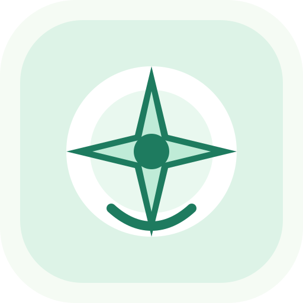

ScholarFit
学术罗盘
博士路径适配测评
一个故事化科研自我理解工具：通过真实研究情境、排序选择、压力恢复、导师环境匹配和行为证据，帮助你理解当前准备状态与下一步成长路径。
不用于招生筛选、招聘淘汰或心理诊断。报告只用于自我反思和科研路径规划。

一个故事化科研自我理解工具：通过真实研究情境、排序选择、压力恢复、导师环境匹配和行为证据，帮助你理解当前准备状态与下一步成长路径。
不用于招生筛选、招聘淘汰或心理诊断。报告只用于自我反思和科研路径规划。